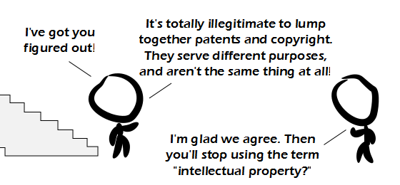

Comic JK 868
When I Feel Like It
⇤
<
?
>
⇥

⇤
<
?
>
⇥
Forum
.
RSS
.
Digg
.
Facebook
.
Reddit
.
Twitter
.
Stumbleupon
Your mother owns patents and copyrights on dorky college boys. Enter your thoughts on number 868 here. Please, no spamming, trolling, phreaking or granting monopolies (especially boardwalk). > Don't you need Boardwalk AND Park Place to have a monopoly? >>Those are some of the worse properties you could purchase. >>>Unless you build hotels and other players land on them a lot. >>>> Isn't it Mayfair and Park Lane? >>>>> Only in your delusional universe. >>>>>> And the original boardgame Background copypasted from the previous comic. >Really? Didn't realise. <--So much sarcasm even I picked up on it >You (the original commenter) must be very wise. >A single staircase resembling shape has been featured in multiple comics! Oh noes! Wow. I troll this box regularly, and I think the cartoonist is feeding me! Can I have your phone number? >867-5309 >>Hi Jenny. I didn't know you write comics! RE: deleters > I've noticed occassionally posts getting removed quickly. I've always attributed it to somebody else posting after me, but having loaded the page before my post, thereby replacing mine. I hope at least most people don't do that intentionally? If you leave this window open for hours at a time, at least refresh before you go to post. > Relax - it's just your anus deleting things. >>>>Probably not >>>>>DELETE! I SAW IT!! >>>>>>BUMP! >>>>>>>Somehow I don't think bumping works the same way here... Ic spiclcled ccoffee ocn my ckeyboacrd and cnow Ic get cc's intcermicxed wcithc evercythcing Ic typce. Plceasec repclacec myc keycboard. >Replace your own keyboard! This ain't a charity! :-P >>Yeah! Besides, we have no idea where you live, so we can't send lynch mobs to your house... ah, I mean, a keyboard. Yeah, that. >>>Maybe writing with a lot of "c" gets copyrighted. >>>>I think that would be a business process and would thus get patented... Hi > Hi, are you hot? ASL? >> 18/F/Japan. Is this a good place to look for friends? I like chatting on a webcam ^_^. >>> What are you wearing? >>>> Frannel pyjama